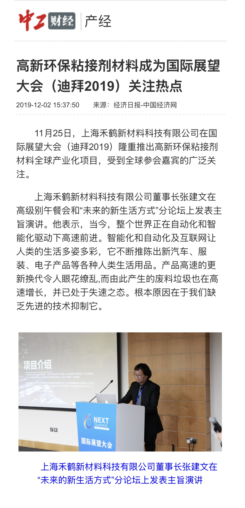

International Collaboration
At the 3rd International Outlook Forum held in Dubai, the chairman of Shanghai Hehe New Material Technology Co., Ltd., Mr. Zhang Jianwen, signed a Memorandum of Understanding with the forum organizing committee on the global industrialization project of high-performance eco-friendly cementitious materials.
In his keynote speech, Mr. Zhang said:
“The world today is moving forward rapidly under the drive of automation and intelligence. Automation, intelligence, and the Internet have made human life colorful. They continue to evolve, delivering new versions of everything from cars to clothing and electronic products. The rate of change is dazzling. However, the waste generated by this rapid evolution is also growing rapidly — and is now out of control. The root cause lies in our lack of effective and advanced technologies to suppress it.”

Signing the MOU in Dubai

Mr. Zhang speaking at the forum

Partial media list: 中工網, 中國日報, 新華網, 經濟日報, 鳳凰網...
← 返回首頁